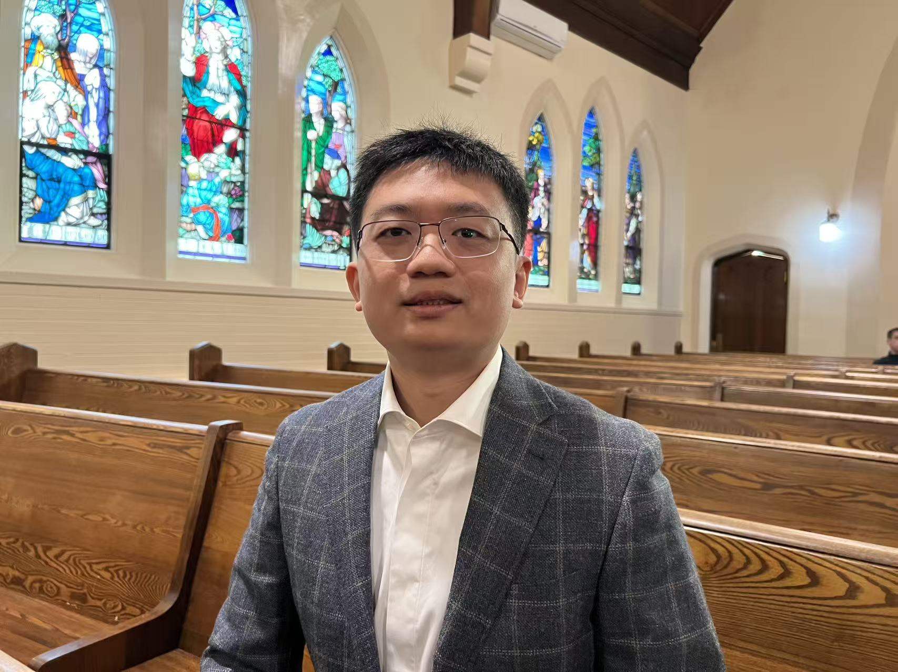

About Me
Data Scientist with a Harvard ALM in Data Science and a strong foundation in machine learning, statistical modeling, and large-scale data analysis. Experienced in building predictive models, developing end-to-end data pipelines, and creating visualizations that support data-driven decision-making.
My interests span machine learning, finance, automation, and applied analytics. Beyond data science, I enjoy mathematics, hardware systems, cooking, hiking, and music.
Education
Harvard University
GPA: 3.62/4.0
University of Toronto
Technical Skills
Programming: Python, SQL, R, MATLAB
Libraries: Scikit-learn, XGBoost, LightGBM, H2O, NumPy, Pandas, Matplotlib, spaCy
Data Science: Statistical Analysis, Feature Engineering, NLP, Time Series, Deep Learning, Data Visualization
Tools: Power BI, Tableau, AWS, Git, Excel, LaTeX, LLM APIs
Languages: English, Mandarin
Projects
AI-Powered FDA Approval Prediction
- Collected, merged, and preprocessed 10+ large-scale datasets with 10M+ records from AACT and Cortellis.
- Developed a rule-based matching algorithm to map drugs to disease types with 98% accuracy.
- Created interactive dashboards in Power BI to communicate key insights to stakeholders.
- Built predictive models using XGBoost, LightGBM, and H2O GBM, improving test accuracy by 10%.
Oil and Gas Production Prediction
- Performed exploratory data analysis and applied Lasso regression for feature selection.
- Implemented Random Forest and Gradient Boosting models, increasing test accuracy by 25%.
Markov Chain Model for Casino Profit Maximization
- Used Monte Carlo simulations to optimize slot machine winning rates for profit maximization.
- Developed a closed-form analytical solution that reduced computing time by 99.8%.
Experience
Mathematics Instructor
- Instructed high school and university-level Calculus and Statistics to 50+ students annually.
- Analyzed student performance data to create personalized, data-driven lesson plans.
- Coached AMC and Euclid contestants, with students reaching top 1% rankings across Canada.
Financial Analyst (Volunteer)
- Analyzed and visualized financial data in Excel to identify trends and insights.
- Prepared reports and presented updates to support management decision-making.
Achievements & Interests
- Mathematics: Ranked top 1% in both AMC 12 and Euclid Mathematics Contest.
- LLM & Automation: Passionate about using LLMs to build automation tools, explore prompt engineering, and develop agentic workflows.
- Finance: Applied LLMs and machine learning to detect S&P 500 patterns and built an automated crypto alert system using AWS.
- Hardware: Built and maintained a 40+ GPU cluster for deep learning training and cryptocurrency mining.
Photos
A few moments and interests I’d like to share.


Music
If you’d like, you can share your musical side here by embedding a YouTube performance, Spotify playlist, or SoundCloud track.
Example: